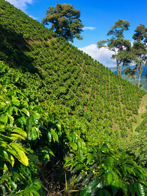
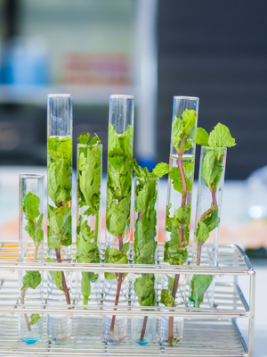

The Climate Crisis Threatens Coffee

- Global temperatures in key coffee-growing regions are rising outside Arabica's narrow 64-70F
window
- Erratic rainfall and prolonged drought stress trees, reducing flowering and bean quality
- Pests like the coffee berry borer are expanding into higher elevations, compounding yield losses
- Small family farms--70% of global production—lack capital to relocate or adapt quickly
Why Genetically Modified Coffee Is the Solution

- Heat & drought tolerance: Introduce genes from robust species (e.g., Canephora) to extend
growing
window
- Pest resistance: Engineer natural defense traits to reduce reliance on pesticides and crop loss
- Enhanced yield stability: Maintain consistent productivity under extreme weather events
- Flavor preservation: Modern breeding/genomic-assisted methods retain Arabica's desirable taste
profile
Roadmap for Adoption & Benefits
- Research collaboration: Share GM coffee advances openly with farmers, cooperatives, and
universities
- Public-private partnerships: Incentivize agritech firms and cooperatives to co-fund field trials
and
infrastructure
- Farmer support programs: Provide access to GM seedlings, training on best practices, and fair
pricing